AWS の開発手法 AI-DLC（AI-Driven Development Life Cycle）を Kiro で動かし、架空企業【ベテランの退職に備える「ナレッジRAGお助けシステム」】の PoC を作りました。初めは既定のワークフロープロファイル classic で始め、56分たってもまだコードを作る前でした。そこで express に替え、確認と承認を減らす設定を入れて作り直したところ、約26分で PoC が動きました。このページでは、まずできたアプリを動画で見せ、そのあと、入れた設定を1つずつ手順で説明します。
後任者が質問すると、社内文書から関係する箇所を探し、根拠にした文書名と抜粋をつけて日本語で答えます。文書は、架空の開発会社が持っている設計書・運用記録・議事録・引き継ぎメモなど約190本です（すべて架空のダミー資料です）。
検索は Python の標準ライブラリだけで書いた文字 n-gram の BM25、回答の文章は同じ Mac で動く Ollama の gemma3:4b が作ります。外部の API もキーも使いません。画面のデザイン（暗い背景にネオン色）も、要件の質問に答えるときに Kiro に頼みました。
5問を続けて質問した録画（54秒）。質問を打つ、「質問する」を押す、回答が出る、根拠までスクロールする、の順です。
15問を試し、根拠に沿って具体的に答えた5問を選びました。逆に「〇〇を参照」で終わる回答もあり、そうしたものは外しています。
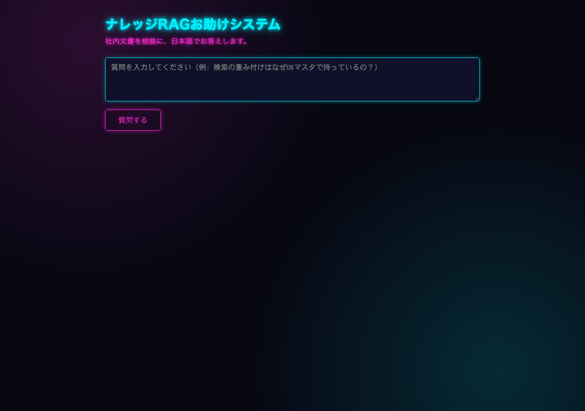
回答の文章は Ollama がその都度作るので、同じ質問でも毎回少し変わります。
同じ依頼文で、ワークフロープロファイルだけを替えて2回作りました。人の答え方は「質問には推奨の選択肢を選ぶ」「承認ゲートはすぐ承認する」にそろえています。
| classic（既定） | express | |
|---|---|---|
| ステージの数 | 14（Unit ごとにさらに設計を繰り返す） | 6 |
| 深さ・テスト方針 | Standard | Minimal |
| 経過 | 56分で中止。要件・ユーザーストーリー・画面・ドメイン・Unit 分割（6つ）・契約・デリバリー計画を終え、1つ目の Unit の設計が済んだところ。コードはまだ無い | 約26分で PoC が動いた（要件分析のあと、計画の承認なしでコード生成とテストまで進んだ） |
| 人が答えた質問 | 31件（9回に分けて） | 3件（1回） |
| 承認ゲート | 11回（中止までに） | 1回 |
ワークフロープロファイルの変え方は2つあります。今回は「最初から作り直して比べる」ので、2つ目の方法をとりました。
・途中で替える: /aidlc --scope express。済んだステージは残し、残りを express の計画に組み替えます。
・新しく始める: /aidlc --scope express <作りたいもの>。最初から express で進めます。
aidlc config list を実行します。各行の「(from scope classic)」で、いまのプロファイルが classic だと分かります。$ aidlc config list depth: Standard test-strategy: Standard guard-policy: off (from scope classic) sensors: on (from scope classic) learnings: on (from scope classic) plan-approval: on (from scope classic) …
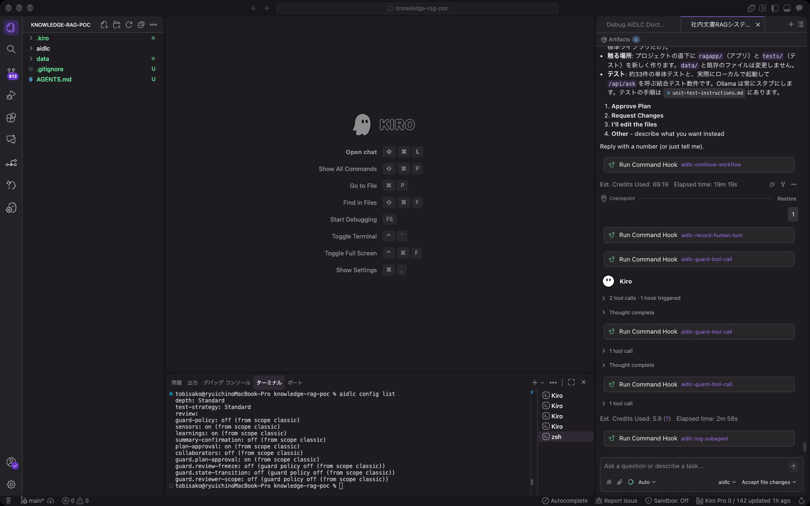
active-intent など）も別の場所へ退避します。残っていると、express を始めたときに「既存の作業の続きか」を聞かれ、質問が1つ増えます。git switch -c classic-途中 && git add -A && git commit -m "classic の途中経過" && git switch main mkdir -p ../退避 && mv aidlc/spaces/default/intents aidlc/.aidlc-sessions aidlc/active-memory ../退避/
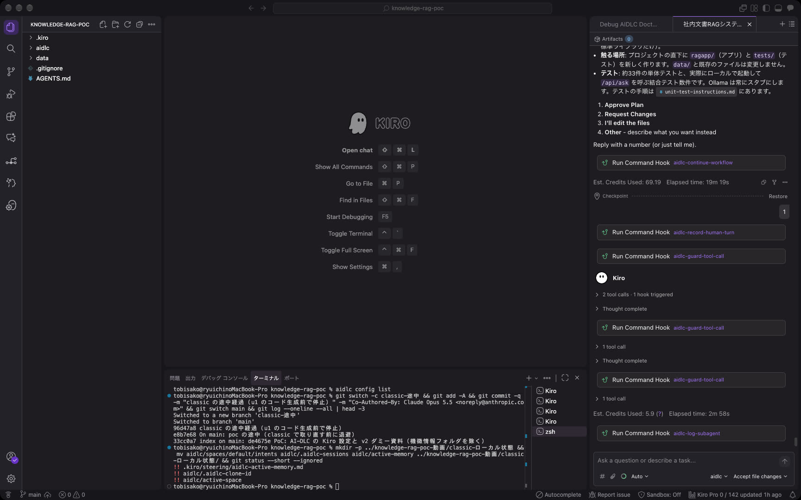
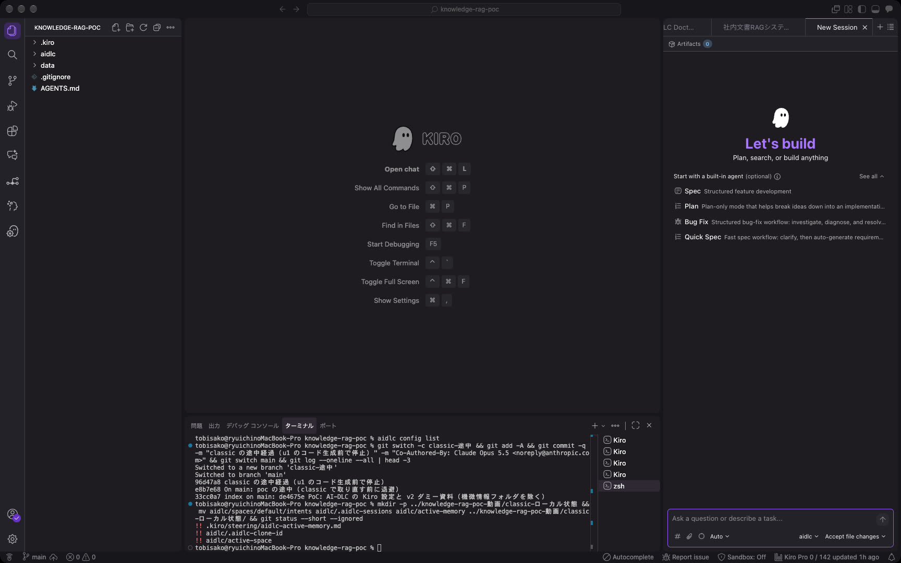
/aidlc --scope express <作りたいもの> を書いて Enter で送ります。classic と同じ文で、--scope の後ろだけを替えました。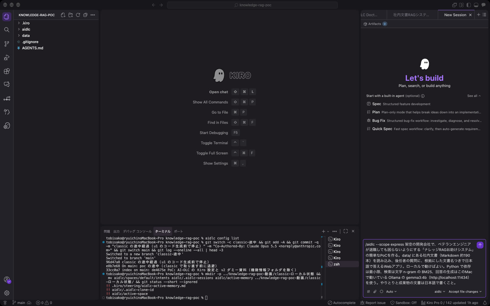
送ったあとの最初の返答（express の計画）:
AI-DLC には、ステージの途中で人に確認させる仕組みが、プロファイルとは別の設定として用意されています。express は、そのほとんどを最初から止めています。ここでは、それを確かめたうえで、1つずつはっきり指定しました。
| 設定 | 止まる場面 | 指定の仕方 | express の既定 |
|---|---|---|---|
| 深さ（depth） | 成果物・図・質問の量 | depth minimal | Minimal |
| テスト方針 | AI が作るテストの本数と種類 | test-strategy minimal | Minimal |
| レビュー | ステージごとの AI レビュー | review none | なし |
| 要約の確認 | 成果物を書く前の「これで合っているか」 | summary-confirmation off | off |
| コード計画の承認 | コードを作る前の計画の承認 | plan-approval off | off |
| 学習の質問 | 直したあとの「次回のために残すか」 | learnings off | off |
| センサー | 自動チェックとその結果での停止 | sensors off | off |
| Guard Policy | 承認のあとで変わった内容の再承認 | guard-policy off | off |
aidlc config list を実行します。express では、ほとんどが最初から off か Minimal で、出どころは「(from scope express)」です。aidlc engine config set <設定> <値> 2>&1 を実行します。2>&1 を付けないと何も表示されません。aidlc engine config set depth minimal 2>&1 aidlc engine config set test-strategy minimal 2>&1 aidlc engine config set review none 2>&1
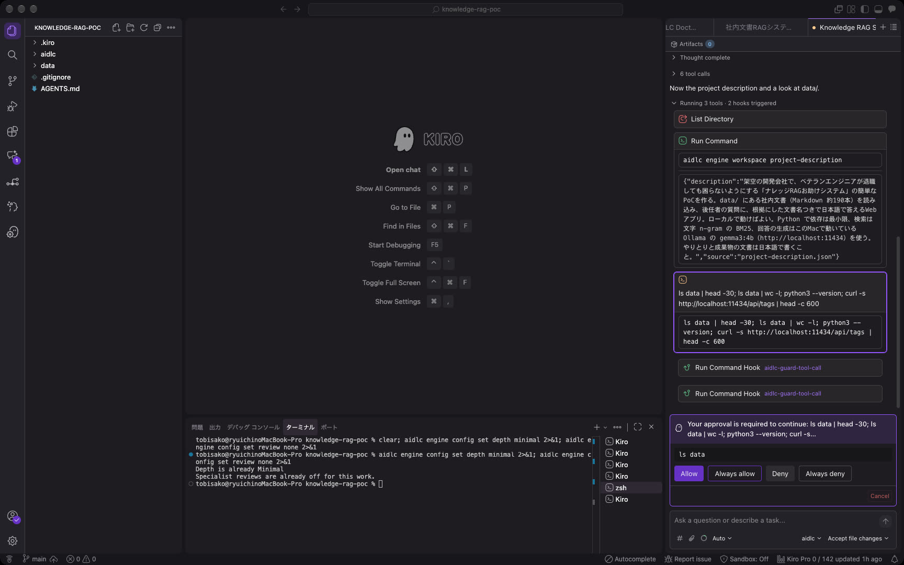
aidlc engine config set summary-confirmation off をターミナルで実行すると、拒否されます。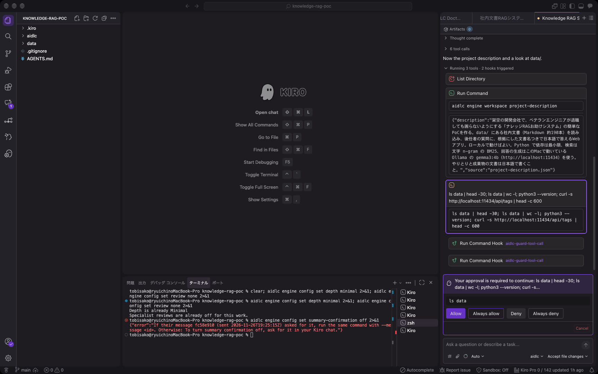
/aidlc config set で始めて設定を並べた1通を送ります。/aidlc config set summary-confirmation off --plan-approval off --learnings off --sensors off --guard-policy off --review none --depth minimal --test-strategy minimal
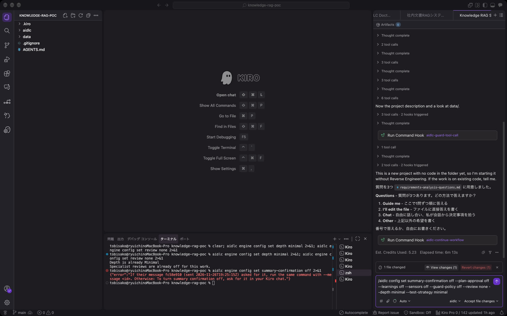
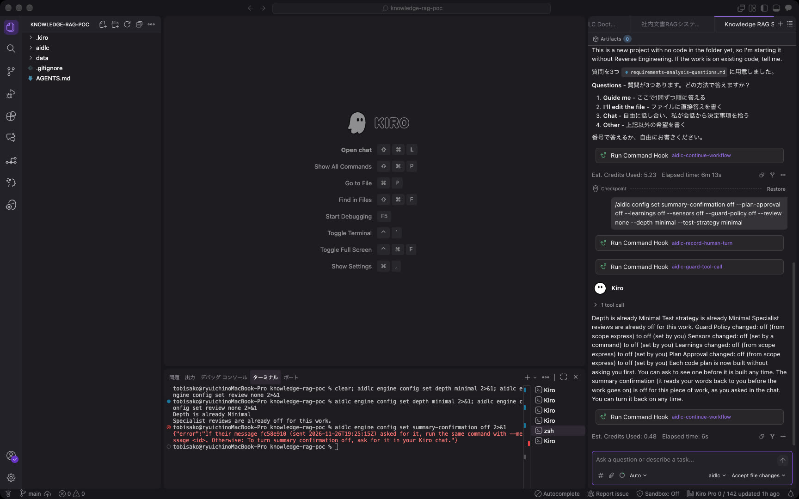
aidlc config list を実行し、出どころが「(set by you)」になったことを確かめます。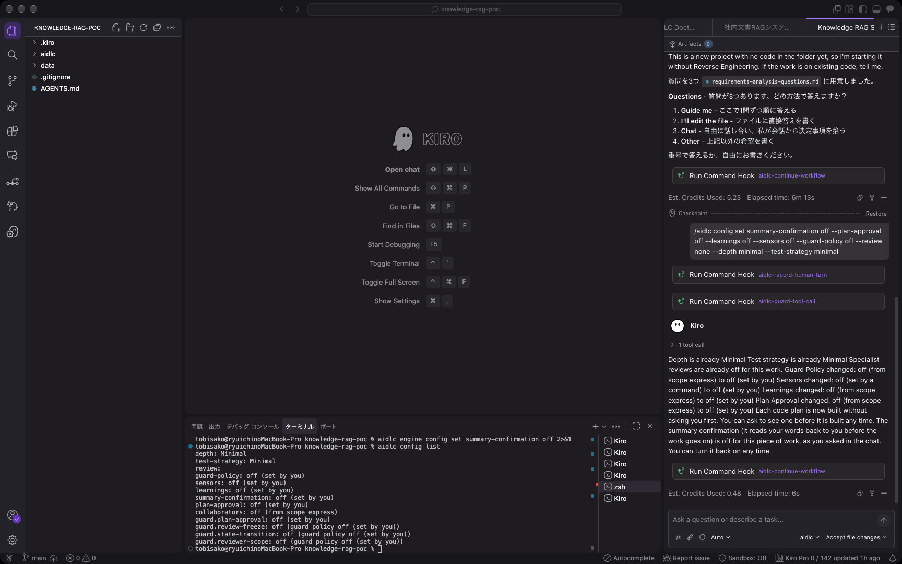
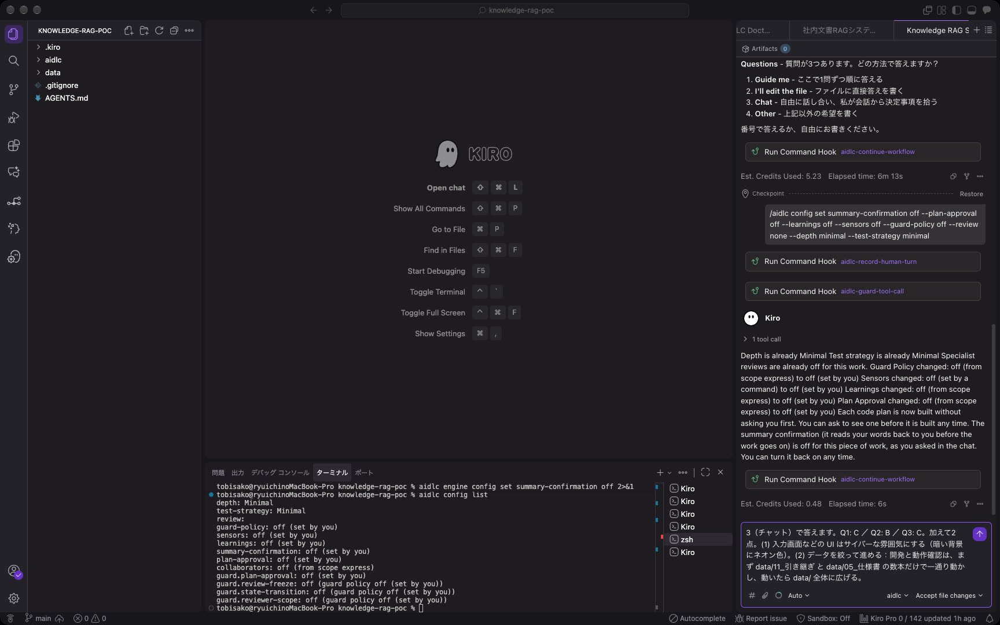
python3 *）と範囲（This workspace＝このフォルダだけ）を選ぶ欄が出ます。確かめて確定します。a && b && c のようにつないだコマンドは、部分ごとに聞かれます。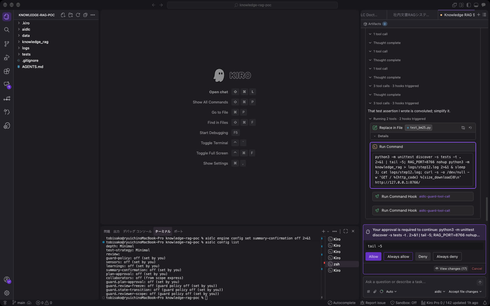
curl などは、毎回の Allow のままにしました。| AI-DLC | awslabs/aidlc-workflows v2.11.5（aidlc config --harness kiro で Kiro 用に設定） |
|---|---|
| IDE | Kiro（Kiro Pro。モデルは Auto） |
| PoC | Python 3（標準ライブラリ）＋ Ollama gemma3:4b。127.0.0.1 だけで待ち受け |
| データ | 架空の開発会社の社内文書 約190本（RAG の実験用に作ったダミー資料。実在の企業・人物とは関係ありません） |
| 録画 | Kiro の手順は画面の範囲を ffmpeg で録画。アプリの動作は Playwright（画面を使わないブラウザ）でページを録画 |
設定の意味と指定の仕方は、AI-DLC 公式ドキュメントによります。